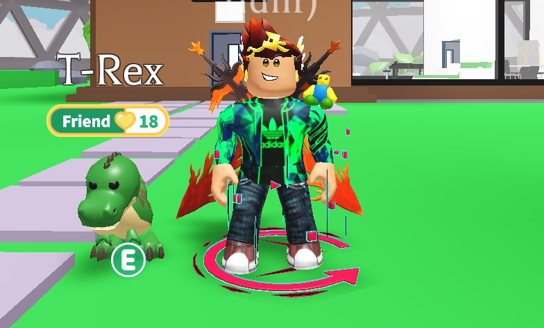

Idliri Site
About Me
Hi my name is Idlir Poçari and this is my first blog!😀
I play Roblox and other games.
I'm albanian and I live in Tirana,Albania.
My birthday is in December 22nd.
I like to program :)
That's it for this blog hope you enjoy it.
